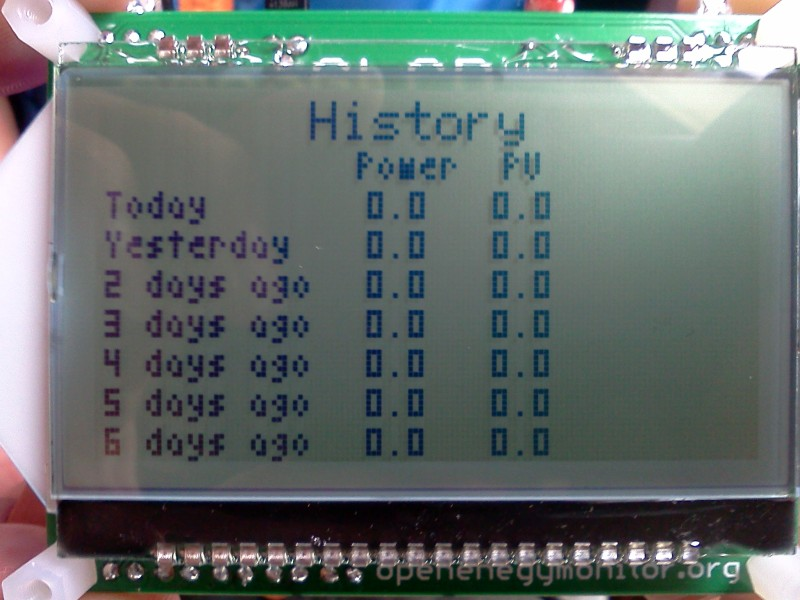

Hi... this is a bit of an odd one - just assembled the V1.4 emonGLCD, all working fine on the test sketch but the screen contrast is very low. I have run it with default contrast/brightness settings in the test code as well as changing them in both directions but not really getting a good display. I then left it running for about 20 mins and the screen slowly but surely faded away (not the backlight - just the pixels) - I can still just about see that the text is there but I need to look very hard, restarting the GLCD doesn't't change anything....
Wondering if this is anything to do with the change to 3V3 on the display? Thanks for any thoughts.
Re: RESOLVED - GLCD on V1.4 - low contrast & fading screen?
That happens to me when:
a) the voltage regulator is damaged / defective
b) the voltage regulator can't supply enough power
c) input voltage is out of specs
d) resistors aren't properly dimensioned
e) some pin(s) of the LCD aren't properly connected - which is difficult because this isn't a breadboard.
Can't think of other probable reasons.
Did you test the LCD before soldering?
Maybe someone can tell you what voltages / resistance values to expect when measuring some of the pins on v1.4
Now, I could suggest you put the regulator to the test. But the way things are soldered it's not that simple. This is one of the reasons why I didn't solder the LCD directly to the PCB.
Re: RESOLVED - GLCD on V1.4 - low contrast & fading screen?
Thanks footswitch....I ran the suggested test on the LCD before soldering but I'm just starting to see why keeping the LCD removable might have been a good idea :-)
All voltages on the board look good and the soldering is usually pretty reliable.
I will try another power supply.
Re: RESOLVED - GLCD on V1.4 - low contrast & fading screen?
Hey! I have emonGLCD v1.3, assembled just yesterday, and right now it's doing the very same thing!
At least you're not alone... :p
I can't yet figure out what's the root cause, but the main problem for me is that I have done too much to this PCB already (desoldered the LCD), so I wouldn't know if it's not entirely my fault.
Re: RESOLVED - GLCD on V1.4 - low contrast & fading screen?
Iv increased in the contrast to glcd.begin(0x19); Just for info.. The display is only slightly dimmer for me at 3.3v over 5v
I would check the voltage at pins 14 - 15 as these are the power pins on the GLCD.
Re: RESOLVED - GLCD on V1.4 - low contrast & fading screen?
Thanks Rob, I'm getting 3.1V between pins 14-15... hmmm.
Also, assuming you are on V1.4, may I ask what value resistors you popped into R7 & R8 ? I'm guessing these are something to do with the switches?
Re: RESOLVED - GLCD on V1.4 - low contrast & fading screen?
Sorry iv got the v1.3 was not even aware that V1.4 was out yet..
3.1 does seem down on what i was seeing i see bang on 3.3v on these pins. How have you got these connected. EG the fly lead or some other way.. (this will only make sence if you have V1.3)
R7 & R8 ? You can have a look at the solder map here http://solderpad.com/openenergymon/emonglcd/
Could you take some photos of both sides to see if there is a component in the wrong place.. (You may only be able to do one side..
Re: RESOLVED - GLCD on V1.4 - low contrast & fading screen?
Just built the V1.4 emon GLCD and getting the same problem. I have the 10k resistors in R7&R8. I've tried on a number of different power sources (laptop usb and desktop with ftdi cable) and am getting 3.3v to the LCD. I have not yet tried the optional 100r 0.5w resistor on the back of the board.
Are you sure pins 14 and 15 of the lcd are power, they look like they are connected together on mine. I get 3.3v between 14 & 13.
Re: RESOLVED - GLCD on V1.4 - low contrast & fading screen?
I left it running overnight and it seems to be working fine this morning...?
Re: RESOLVED - GLCD on V1.4 - low contrast & fading screen?
Hi Tim, yes odd - mine settled down too when left on for a few hours.
Do you have slight vertical banding on your screen? If I look closely I can see the the columns of pixels go something like 4 light & 2 darker. Not a huge problem but strange.
Re: RESOLVED - GLCD on V1.4 - low contrast & fading screen?
Precisely the same here.
Mine (v1.3) is either fading or getting too dark (contrast?), sometimes returning to normal operation. When the screen gets dark, the vertical bars that you mention above aren't just visible: in fact most of the screen becomes black. But everything's working underneath, you can see it from an angle.
Note: v1.4 shouldn't have a 100 ohm resistor between PWR and GND for the LCD, since it's already powering the LCD with 3.3 V.
At least everything I've read up until now confirms this.
Re: RESOLVED - GLCD on V1.4 - low contrast & fading screen?
Yes Rob, I too have the fainter vertical columns. I have not seen the screen getting too dark (yet!).
Re: RESOLVED - GLCD on V1.4 - low contrast & fading screen?
I wonder what's going on with this screen, seems to be a common problem - I'm puzzled.
This is what my screen looks like with a JeeLabs demo.
Re: RESOLVED - GLCD on V1.4 - low contrast & fading screen?
I also get this but increasing the contrast and decreasing the PWM of the backlight seem to make it almost dissapear..
Saying this iv got v1.3 but it is running at 3.3v
Re: RESOLVED - GLCD on V1.4 - low contrast & fading screen?
Hello, sorry to hear about the trouble, I will ask Glyn to see if he has any ideas. I've just uploaded the schematics for version v1.4 here and detailed firmware changes to do with the switches:
http://openenergymonitor.org/emon/node/761
Re: RESOLVED - GLCD on V1.4 - low contrast & fading screen?
I just made my 1.4 kit today and get the same problem. It is fine with the test scetch but with the regular scetch makes the display so dim it is almost impossibe to read. I've left it on while I'm away for a while so I'll see if that makes any difference.
I have installed R7&8 but have left out the 100R for the back.
Also the build guide needs to be updated for 1.4, but I was able to figure it out with the schematic.
Re: RESOLVED - GLCD on V1.4 - low contrast & fading screen?
I just left it switched on. The dislay faded off almost completely and then came back to full contrast over a couple of hours. Looks fine now. Maybe the displays were manufactured a long time ago and need time to "re-activate" I know old tech LCD's did have issues with image burn which could be mitigated by exercising the display. Anyone else have any ideas. Can't see how anything to do with the driver could cause (or magically cure) this kind of issue?
Re: RESOLVED - GLCD on V1.4 - low contrast & fading screen?
I've had a similar experience with a new emonGLCD 1.4 build over the weekend. The LCD display starts off so feint you can barely read it. After leaving it on for a couple of hours, the display becomes easily readable. There are still a number of lighter vertical strips though. When I switch mode to show the time, the pixels are much bolder. I tested the voltage into the LCD display between pins 13 and 14 and I get 3.3v. I'm baffled!
Re: RESOLVED - GLCD on V1.4 - low contrast & fading screen?
I've just done a blog post on the emonGLCD V1.4, better late than never! Sorry if your having contrast issues, we have found that after being switches on a while the LCD seems to resolve it's self. There may be somesort of 'bedding-in' period when powering up the LCD for the first time due to the LCD now running at a
lowercorrect voltage. Please post on this thread if you find the problem persists.Here's the blog post: http://openenergymonitor.blogspot.com/2012/07/emonglcd-v14.html
Re: RESOLVED - GLCD on V1.4 - low contrast & fading screen?
Same here - capacitors?
Exactly the same for me. New 1.4 EmonGLCD kit arrived yesterday, and I spent the evening building it.
LCD tested ok prior to soldering as suggested, but contrast was rather poor. After soldering in, the contrast faded even more to become totally blank. Seeing this thread, I left it running overnight, and today the test sketch displays fine. Power to LCD measures 3.3 volts.
I was wondering whether perhaps one of the 10uF capacitors has reversed polarity? Would that not cause it to gradually change into a resistor over several minutes as the dielectic disolves, and then start working again as the dielectric slowly re-forms on the other plate? It's only a hypothosis, but the requirement for a new LCD screen to 'bed in' seems nonsense to me.
Re: RESOLVED - GLCD on V1.4 - low contrast & fading screen?
The 'bedding-in' period does indeed seem like a strange phenomenon, I cannt explain it at the moment. The 10uF capacitors are connected identically as they were in the previous version of the emonGLCD (V1.3) and no such phenomenom was exhibited. A possible explination is that we are currently going through a sub-optimal batch of LCD units....
You can view the schematic for youreslf here: solderpad.com/openenergymon/emonglcd
Re: RESOLVED - GLCD on V1.4 - low contrast & fading screen?
I recon that two capacitors are backwards!
Comparing this:http://jeelabs.net/attachments/1019/glcd-info.png (which gives the pin-out of the module)
with this:http://openenergymonitor.org/emon/sites/default/files/emonGLCD_V1.4.png suggests that both C13 and C14 are backwards!
For example pin 11 is labelled as CAP3P on the first drawing, but the schematic has this as a -ve end of C14.
Martin
Re: RESOLVED - GLCD on V1.4 - low contrast & fading screen?
Your right! Well spotted. I've just double checked myself againsed the datasheet.
The design was based on the JeeLabs graphics board, it seems this also has the same error. I've just read the build guide for the graphics board and there is a note stating "The next step needs some care, because these two electrolytic caps are marked the wrong way on the silkscreen – they should be placed as follows:".
Thanks a lot for spotting this error, its suprising it has not caused more issues than it has. It seems that when the LCD was ran at 5V as in the case with the V1.3 (this is actually out of spec for the unit, another bug inherited from the Graphics Card) the contrast seemed to be fine. I have had a V1.3 running for about 12 months continuously without any contrast issues or resets.
Tomorrow I will build up a new emonGLCD V1.4 with C14 and C13 in the correct orientation and post results....
Re: RESOLVED - GLCD on V1.4 - low contrast & fading screen?
You could always put an analogue moving coil multimeter across them and find out for sure! (That will fairly reliably respond to the average voltage).
Re: RESOLVED - GLCD on V1.4 - low contrast & fading screen?
I would have checked with a multimeter, except that once the LCD is soldered in, the capacitor feet are totally inaccessible.
I'm a bit puzzled too why it worked without any obvious issues when fed from a 5v spply. Maybe on 1.3, the contrast too faded for a while, but not to the extent that anyone really got bothered by it.
I was trying to find some reference somewhere about whether electrolytics can be 'reversed' in this way and how they behave when mall-treated. All I could find is they tend to overheat and explode! Well, clearly, these ones don't.
Martin
Re: RESOLVED - GLCD on V1.4 - low contrast & fading screen?
How electrolytics behave when reverse biassed depends on the current. If it is limited to a small value, then as far as I know they'll just sit there conducting, and what heat there is will be dissipated and nobody notices. I think they tend to look like a resistance in the order of tens of ohms. You can certainly reverse bias an electrolytic with a very small voltage and get away with it for a short time, but it's not recommended. If the current is large, the electrolyte boils and then you tend to have boiling electrolyte, paper and aluminium splattered everywhere - it can be extremely nasty stuff.
This paper http://www.ken-gilbert.com/images/pdf/lytic_voltage_limit.pdf explains the mechanism and gives a reverse voltage limit of 1-3 V.
Re: RESOLVED - GLCD on V1.4 - low contrast & fading screen?
I've had some nasty experiences with tantalum beads being inserted reversed. A nice minature flame thrower. And they can sit there for months or years before exploding.
Lloyd
Re: RESOLVED - GLCD on V1.4 - low contrast & fading screen?
Iv'e just built up an emonGLCD V1.4 with C13 and C14 inserted the opposit way round. The LCD powerd up immediately wtih no fading of contrast. I'll keep it powered up for a long term test.

I've added a note to the build guide to state that C13 and C14 should be inserted the opposite way round to the markings on the PCB.
Thanks again for spotting this!
Re: RESOLVED - GLCD on V1.4 - low contrast & fading screen?
Just measured the voltage across the capcaitors when the LCD is powered up (displaying the clock page). There is 8V across C14 and 0V across C13. This was measured on an older emonGND where the capacitors were reversed polarity.
Re: RESOLVED - GLCD on V1.4 - low contrast & fading screen?
Does this mean we should remove them and swap them round even on the old boards (v1.3)..
Would we see any improvement on contrast also?
Not too keen on the thought it could go pop..
Re: RESOLVED - GLCD on V1.4 - low contrast & fading screen?
Exactly what I was thinking!
Since the GLCD is designed to run 24*7, should we all be concerned?
The prospect of desoldering the LCD panel to gain access to the caps' solder pads is a little daunting!
I'm hoping that:
a) the chance of going 'Pop' is small. If they didn't explode during the initial bedding-in, then all is fine.
b) even if they do go POP the worst that can happen is that the LCD stops working and we have to build another kit.
If I do decide to replace the caps, then how to do it? By far the easiest way to remove the LCD panel to gain access would be to cut all the legs then desolder one by one. Where can one get replacement LCD panels from? Perhaps Glyn could post somewhere the actual make and model of these? (I've already folded my panel up and down a couple of times - not sure how many more times I can do this before the pins start breaking).
Martin
Re: RESOLVED - GLCD on V1.4 - low contrast & fading screen?
Lloyd
A nice minature purple flame thrower. Fixed that for you
robinsmh
If they didn't explode during the initial bedding-in, then all is fine. I would not trust that. The electro-chemical reactions going on inside mean that they are increasingly likely to fail over time.
Re: RESOLVED - GLCD on V1.4 - low contrast & fading screen?
My hypothosis is that during that initial bedding in period, the caps actually did fail, then gradually reformed with a dielectric layer building up on the cathode (now used as the anode). If they survived that without exploding, then the circuit they are connected to is unable to deliver enough current to overheat them, so it should all be safe. However - don't quote me on that! I'm just a software engineer who knows almost nothing about the inner workings of capacitors.
Re: RESOLVED - GLCD on V1.4 - low contrast & fading screen?
The display is a DOGL128x EA-6. Manufactured by these guys in Germany, MMS Electronics is the UK distributor. We can provide the LCD on it's own if required. It is possible to access the capacitors by just de-soldering the top legs of the LCD then bending it back to gain access. It's still quite a fiddly job though and there is a risk of damaging the LCD.
We have 20-25 emonGLCD units installed in our lab, houses and other local houses these have been running without issue 24/7 since the end of last year.
Re: RESOLVED - GLCD on V1.4 - low contrast & fading screen?
I suggested this to Glyn and he seems to think it is practical, though great care would be needed:
Take the capacitors out of circuit by cutting the LCD pins leaving as much as possible on the LCD, then solder replacement capacitors to the cut-off stubs.
Re: RESOLVED - GLCD on V1.4 - low contrast & fading screen?
Yep - capasitors C13 and C14 are wrong way round on v 1.4 leading to low contrast. Suggest that there is a clear message of reversing the polarity added with BOLD and BIG RED to the build instructions. (of course its there but I just missed it as building the board is so mechanical excersise)
Re: RESOLVED - GLCD on V1.4 - low contrast & fading screen?
You must watch these little points!
Re: RESOLVED - GLCD on V1.4 - low contrast & fading screen?
Ah....ha - thanks for the cap info - looks like this sorted the issue nicely :-)
One way to do this (without taking the LCD off) is snip off the caps to be replaced, pop a dob of solder on each of the 4 pads and the in turn use a £3 (or more if you fancy) de-solder pump to suck up the solder and hopefully the remaining cap leg at the same time. 2 of my cap legs needed persuasion with a pair of tweezers but all in all a fairly painless removal. When you put the new caps back you will need to keep the cap body off the PCB by about 3mm (to get the solder tip in) so either use a more compact cap so the tops line through with the other 2 caps or fold the new caps back down onto the PCB... so you can get the back cover on again :-) Its about a 5-10 minute job.
Re: RESOLVED - GLCD on V1.4 - low contrast & fading screen?
b***x got the same problem and thought it was me - this is the first project I've done in about 10 years and was very careful to follow the instructions! I built the board about two weeks ago and was just getting round to loading the scripts up, I now see that the text is there, Can you make it in RED please, then I might not have missed it :(
If I'm feeling brave I might follow robur's advice otherwise I'll leave it on overnight, and see if the contrast improves --- else if it ain't broke don;t fix it comes to mind..
Re: RESOLVED - GLCD on V1.4 - low contrast & fading screen?
Hello!
I've just built up an emonGLCD V1.4 with C13 and C14 inserted the opposite way round as suggested in step 7. At first there was a low contrast with vertical bands of more visible columns of pixels. As I experiment more, I get less and less contrast. Now I can barely see the pixels. I'll try to leave it overnight and see if that helps.
Re: RESOLVED - GLCD on V1.4 - low contrast & fading screen?
You could try adjusting the contrast - it's the 0x20 (the maximum) in the line "glcd.begin(0x20);" at the top of setup( ).
Re: RESOLVED - GLCD on V1.4 - low contrast & fading screen?
I changed contrast but with no visible difference. As I told yesterday I left it working all night long, and today it looks completely dead. I can't see anything. While writing this message I've seen a second or two of increased contrast (with more contrast vertical stripes) but then it went back to clear screen. Everything seems soldered well. Any ideas how to debug this? Thank you!
P.S. Voltage on LCD is exactly 3.3 V. (measured 14-15 pins)
Re: RESOLVED - GLCD on V1.4 - low contrast & fading screen?
It does sound to me like a voltage regulator problem. The LCD has a voltage boost circuit (the Sitronix ST7565R data sheet explains - pages 31 onwards) and I think there is the first place to look. Make sure all the capacitors are present and correct (and look again for bad joints!). We're using the circuit of diagram 1.1 on P.38.
Re: RESOLVED - GLCD on V1.4 - low contrast & fading screen?
Robert, thanks for answering. All the capacitors are present, C13 and C14 are rotated 180° as suggested. I am attaching a photo of my PCB.
Does 3.3 V on LCD look wrong to you?
Re: RESOLVED - GLCD on V1.4 - low contrast & fading screen?
Yours looks exactly the same as mine - even the resistors and the non-polarised capacitors are the same way round! The only difference I can see is I've got a black aerial. So there's nothing obvious there.
Here are the voltages for mine. (All d.c. measured with a DMM)
1 - 8.53
2 - 7.34
3 - 6.09
4 - 2.48
5 - 1.24
7 - 1.63
8 - 7.07
9 - 4.44
10 - 1.65
11 - 9.68
12 - 10.96
14 - 3.27
15 - 3.27
I'm not certain, I think the pins relate to the Sitronix data thus:
Pin Symbol Level Function
1 V0 - LC Drive
2 V1 - LC Drive
3 V2 - LC Drive
4 V3 - LC Drive
5 V4 - LC Drive
6 VSS L Power Supply 0V (GND)
7 CAP2N - Voltage Converter
8 CAP2P - Voltage Converter
9 CAP1P - Voltage Converter
10 CAP1N - Voltage Converter
11 CAP3P - Voltage Converter
12 VOUT - Voltage Output about +12V
13 VSS L Power Supply 0V (GND)
14 VDD2 H Power Supply Booster
15 VDD H Power Supply +1.8..3,3V
16 SI H / L Serial Data In
17 SCL H / L Serial Clock
18 A0 H / L L= Command, H= Data
19 RST L Reset (active low)
20 CS1B L Chip Select (active low)
I suggest you check against this and we'll take it from there.
Re: RESOLVED - GLCD on V1.4 - low contrast & fading screen?
Hi, Robert.
Thanks for taking your time.
Here are my results:
Re: RESOLVED - GLCD on V1.4 - low contrast & fading screen?
It's obvious that all your voltages on the LCD are somewhat lower - some quite a lot lower, your pin 12 is only a little more than half mine - and I think that is probably the cause. But at the moment I can't think of a good reason why, as the supply voltage is correct. My thoughts are along the lines of it could be the driver IC or a faulty component around the voltage multiplier, or something dragging it down.
Re: RESOLVED - GLCD on V1.4 - low contrast & fading screen?
One more observation:
If it stays off for a while, when I switch it on, I can see a picture. It has vertical stripes and rather low contrast but it is readable. Then it starts to degrade to almost invisible. While writing this message I glanced on the screen and saw it in a perfect contrast. It stayed like that about half a minute and then began to turn low and back high contrast rapidly like there was a loose contact somewhere. I checked and pressed every part but it's definitely not a contact issue.
Maybe I should try to replace the C8-C12 capacitors as they are still accessible. Or should I invent how to unsolder LCD panel and check C13-C16?
Re: RESOLVED - GLCD on V1.4 - low contrast & fading screen?
Hi Ababak,
Sorry to hear your having trouble. It sounds like you might have a faulty LCD. I've looked at the photo of your assembled emonGLCD and all look well.
Robert: thanks a lot for helping to debug this.
We're happy to send you another emonGLCD kit free for charge, including all components accept at ATmega328 microcontroller and plywood fascia as these can be easily swapped from the faluty unit.
Please could you email me your origional order number to glyn.hudson@openenergymonitor.org.
All the best,
Re: RESOLVED - GLCD on V1.4 - low contrast & fading screen?
Thanks, Glyn, I appreciate this very much. Sent you an e-mail.
Re: RESOLVED - GLCD on V1.4 - low contrast & fading screen?
Sorry to dig this old post up again but does anyone know why 10uF electrolytics were used in the first place?
The datasheet for the display shows 1uF unpolarized capacitors, which seem like a better choice if they work.
I'm just about to build another emonGLCD so I'm going to try 1uF capacitors in this one.